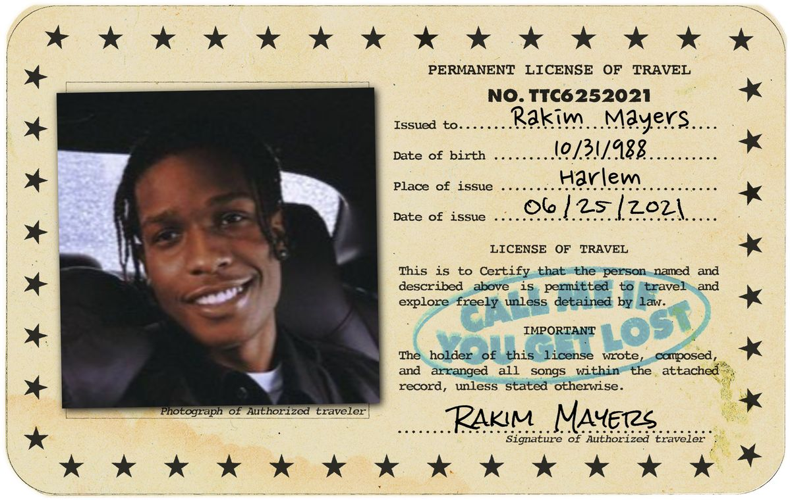
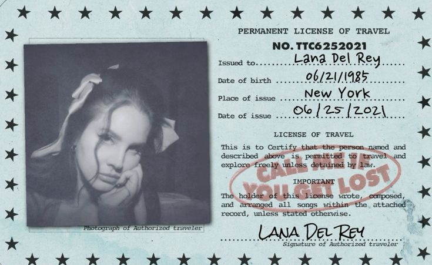
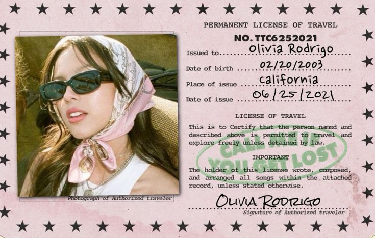
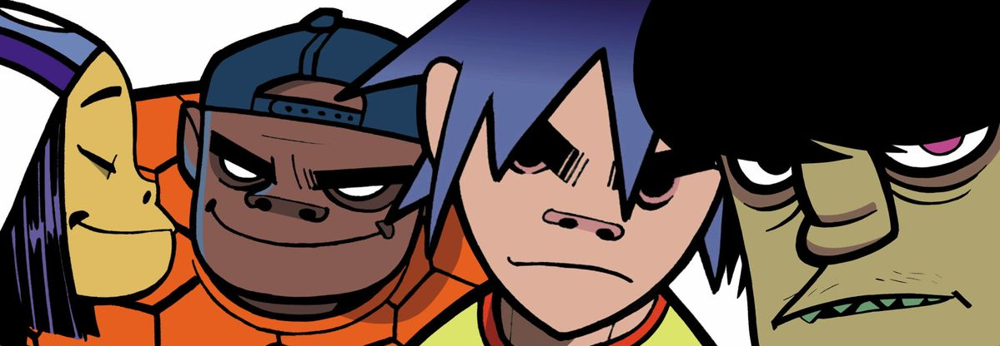
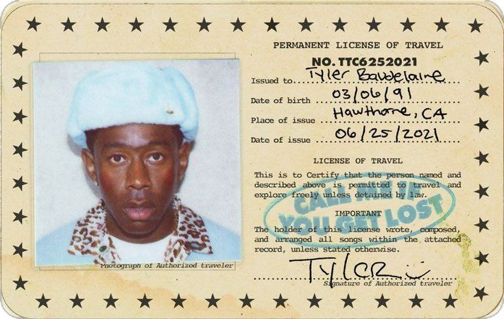

Harry Styles
Поп, фанк и винтажное звучание — от спокойных баллад до танцевальных песен...

A$AP Rocky
Психоделический хип-хоп, эксперименты со звуком и узнаваемый визуальный стиль...

Lana Del Rey
Меланхоличный поп с атмосферой старого кино, летних дорог и несбывшихся надежд...

Olivia Rodrigo
Гитарный поп-рок о взрослении, разочарованиях и чувствах, которые трудно держать в себе...

Gorillaz
Gorillaz придумали музыкант Деймон Албарн и художник Джейми Хьюлетт. Лицами группы стали четыре персонажа: 2-D, Мёрдок, Нудл и Рассел. Их характеры, приключения и отношения раскрываются в клипах и иллюстрациях, создавая целую вселенную вокруг музыки. Звучание Gorillaz постоянно меняется. В нём встречаются альтернативный рок, хип-хоп, электроника, фанк и поп. К работе над песнями присоединяются приглашённые исполнители, каждый из которых приносит собственную манеру и настроение. Поэтому знакомство с группой может одновременно стать открытием других музыкантов и жанров. Разницу легко услышать в известных композициях. «Clint Eastwood» сочетает размеренный ритм с рэпом, «Feel Good Inc.» запоминается басовой линией, а «On Melancholy Hill» погружает в мягкое синтезаторное звучание. При этом песни объединяет особая атмосфера: за яркими образами часто скрываются одиночество, тревога и размышления о современном мире. Музыка и рисунок здесь дополняют друг друга. Можно сначала услышать песню, затем посмотреть клип и заметить детали, которые меняют её восприятие. Поэтому знакомиться с Gorillaz интересно и через отдельные треки, и через целые альбомы.
Подробнее»
Tyler The Creator
Рэп, соул и джаз складываются в музыкальные истории с яркими персонажами...